Starbucks has become one of the most recognizable cafés in the Philippines since it first opened in 1997. With its 'homey' and welcoming atmosphere to the iconic yet comforting coffees they make, everyone has grown to love Starbucks. Today, there are hundreds of branches nationwide, ranging from quiet study-friendly spots to large, scenic cafés that attract tourists and coffee lovers.
Below are some of Starbucks' branches around the country, some being spread out across regions while some are located just around Quezon City. Whether you want to check out the more eccentric branches for social media posts or if you want to simply enjoy a cup of coffee, Starbucks has its doors open for you. Who knows, maybe a Starbucks is just a small walk away!
Click here to view more branches:
Starbucks Branches◊ Starbucks, Ayala Malls Manila Bay in Parañaque City
◊ Starbucks, Twin Lakes Tagaytay in Tagaytay
◊ Starbucks, S Maison in Pasay City
◊ Starbucks, Pandiman Building Intramuros in Manila
◊ Starbucks, Macapagal Boulevard in Parañaque City
◊ Starbucks, Camp John Hay in Baguio City
◊ Starbucks, The Grove in Pasig City
◊ Starbucks, Evia Lifestyle Center in Las Piñas City
◊ Starbucks, Domicillo Design Hotel in Tagaytay
 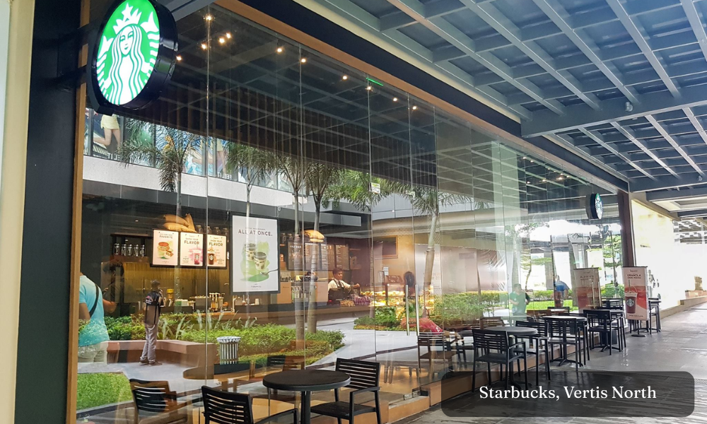
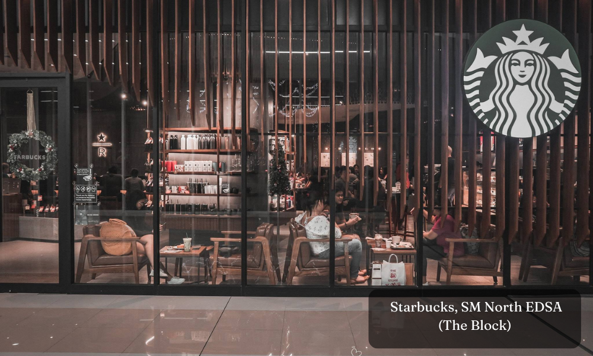
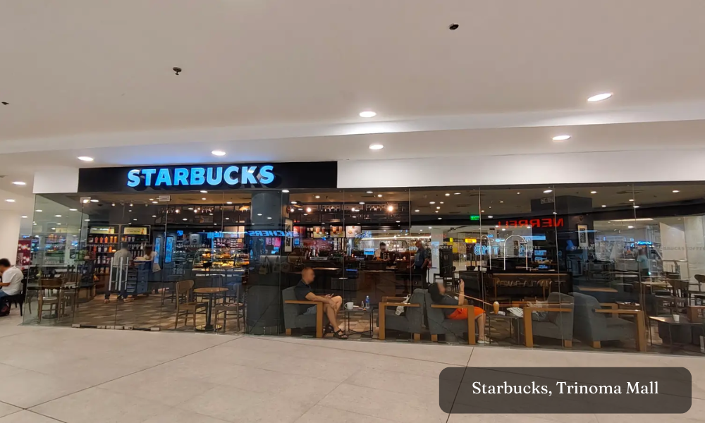
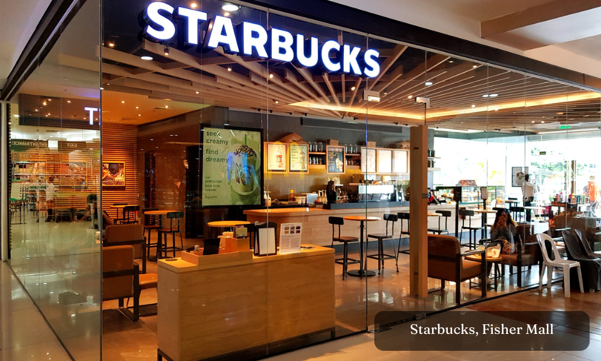
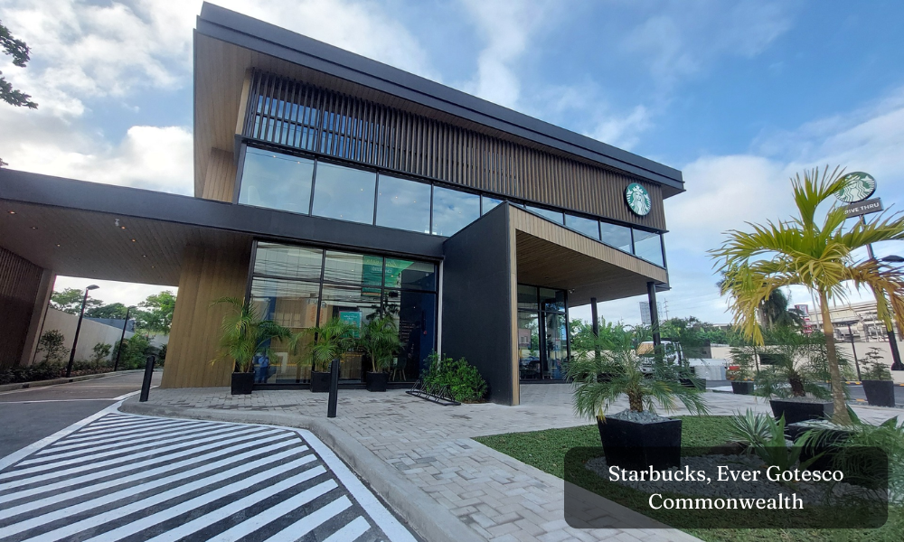
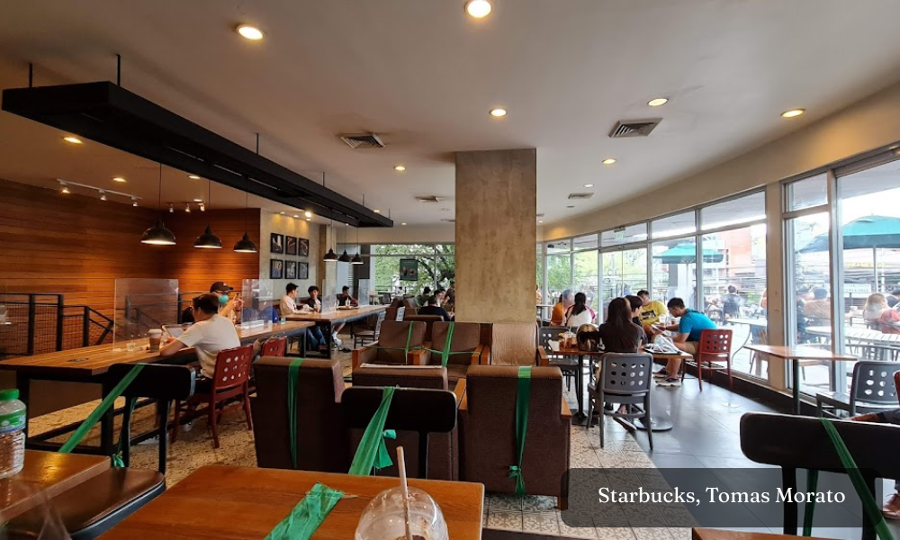
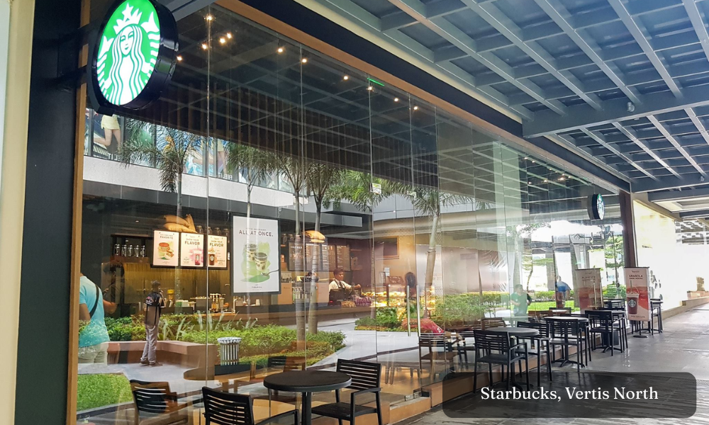
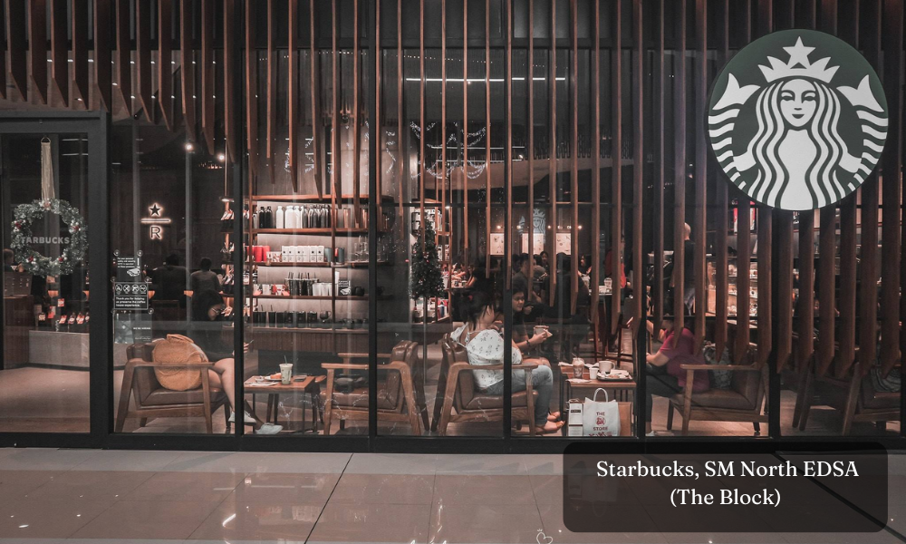
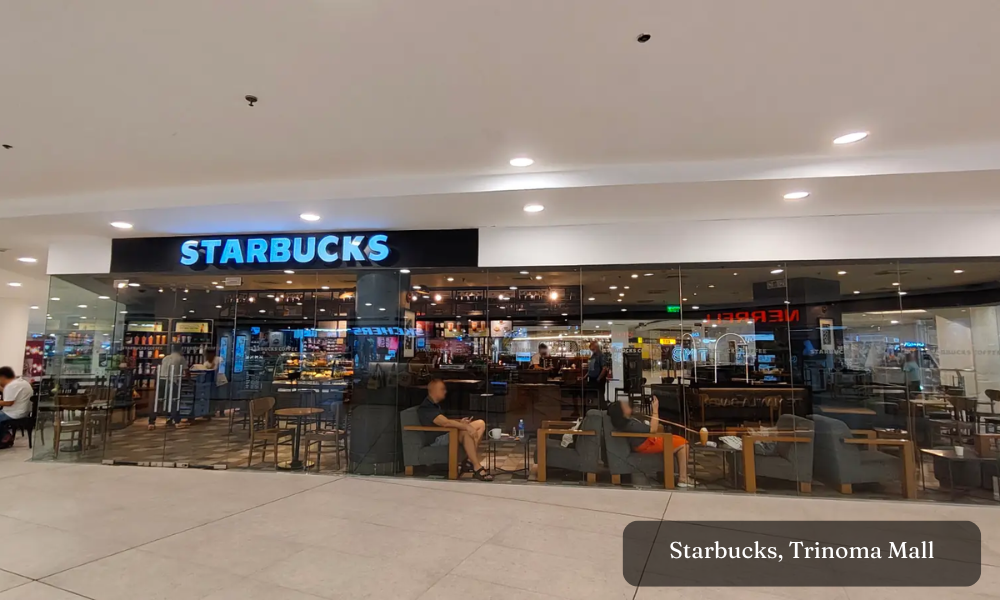
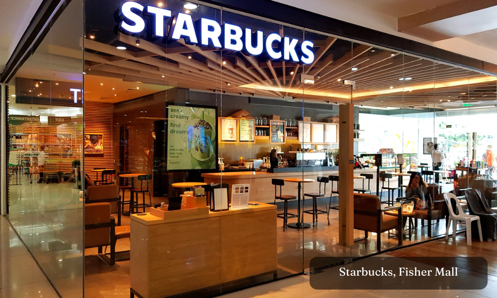
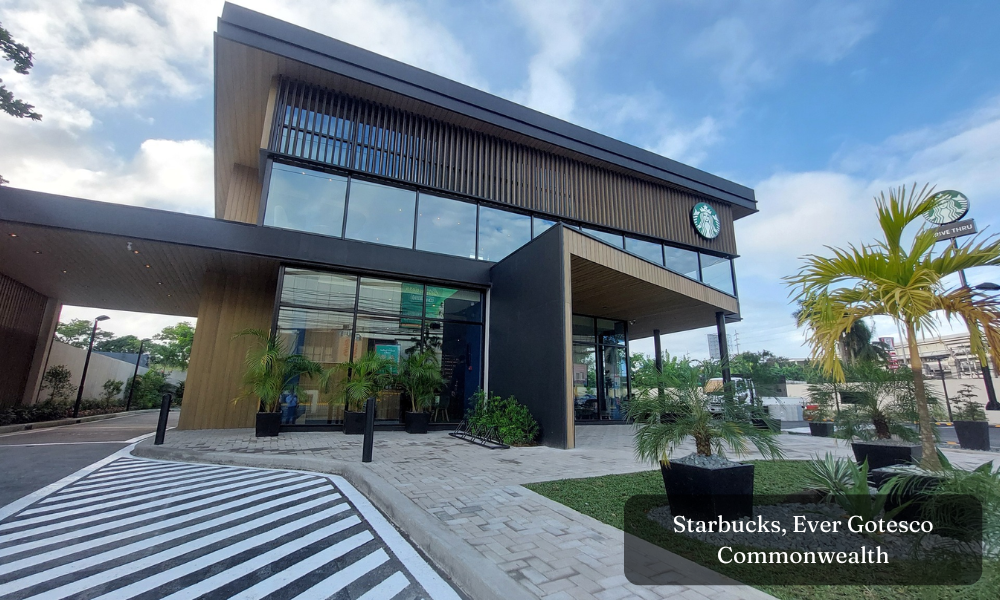
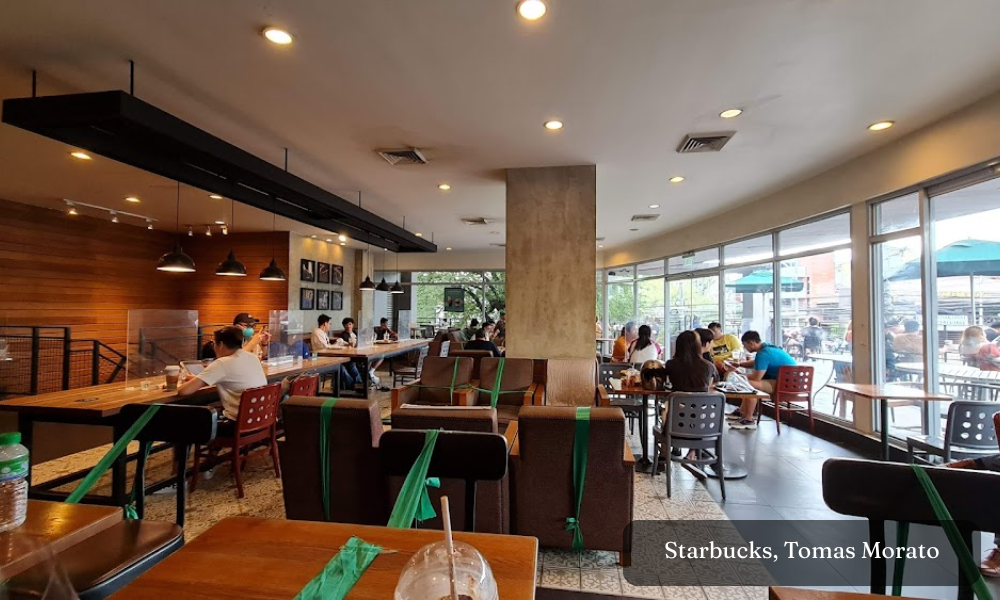
◊ Starbucks, UP Town Center
◊ Starbucks, SM North EDSA (The Block)
◊ Starbucks, Trinoma Mall
◊ Starbucks, Tomas Morato
◊ Starbucks, Fisher Mall
◊ Starbucks, Ever Gotesco Commonwealth
◊ Starbucks, Vertis North